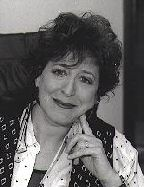

‚Üê Back to MarckBeggs.com | Arkansas Literary Forum archive, preserved as originally published‚Üê Back to MarckBeggs.com | Arkansas Literary Forum archive, preserved as originally published
‚Üê Back to MarckBeggs.com | Arkansas Literary Forum archive, preserved as originally published‚Üê Back to MarckBeggs.com | Arkansas Literary Forum archive, preserved as originally published|
 Crescent Dragonwagon is the author of 40 books, including cookbooks (Dairy Hollow House Soup & Bread, a Julia Child Award and James Beard Award nominee, has sold over 260,000 copies), childrenís books (Half a Moon & One Whole Star, a Coretta Scott King Award-winner), and novels (The Year It Rained, a New York Times Notable).She has also written for periodicals ranging from Cosmopolitan to Fine Cooking to Lear's, Mode, and the New York Times Book Review. Her forthcoming Crescent Dragonwagon's Vegetarian Kitchen will be published by Workman Publishing in 2001 and is described by its editor as "in effect a vegetarian Joy of Cooking." It
will come out at about the same time as three new children's books, The
Sun Begun, And Then It Rained/And Then the Sun Came, (Simon
& Schuster) and Sack of Potatoes (Marshall Cavendish).
She
has been a spokesperson for the California Almond Board and Le Creuset,
and is one of the top ten most-requested speakers at the
International Association of Culinary Professionals. She has appeared on
Good Morning America, CNN's On the Menu, and TVFN.
(CD kneels in a
then-new herb garden, right) Crescent
Dragonwagon's Homepage:
www.dragonwagon.com |